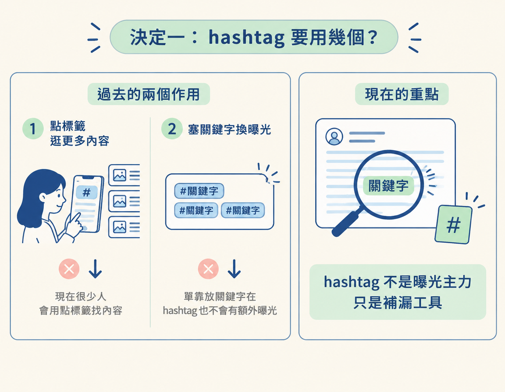
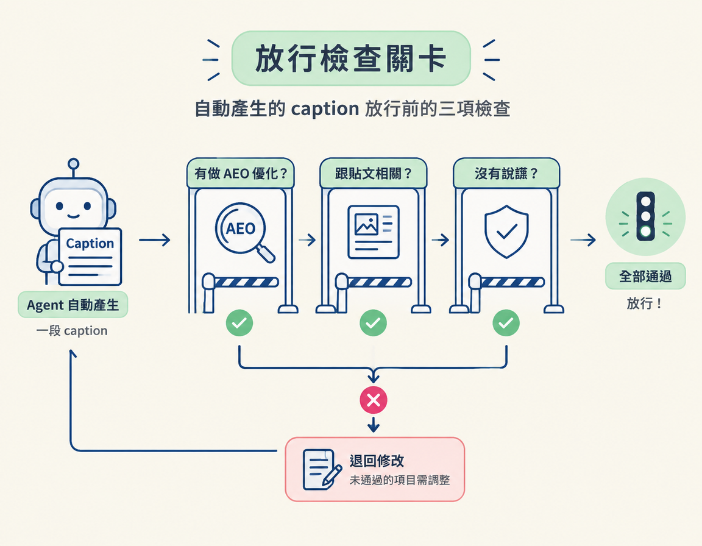
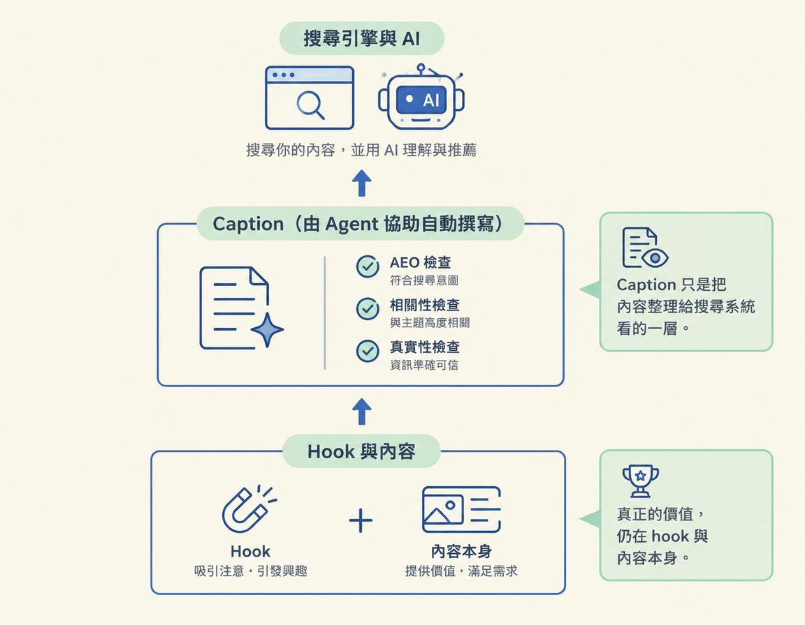

你會判斷 hashtag 該用幾個、什麼時候可以不用，也會知道何時能把 caption 交給 agent 自動撰寫。AEO 是讓內容更容易被搜尋系統找到、理解的做法；自動產生的 caption 則必須符合 AEO、貼文內容相關，而且不能造假。
這是 Captions 與 AEO 的最後一步。前面已經談過 caption 的寫法和四條規則，現在要把它們用在兩個實際決定上：hashtag 要放多少，以及 caption 能不能交給 agent 自動寫（agent 是協助自動完成工作的工具）。
這兩個問題都在問同一件事：力氣該花在哪裡？這一步會用到前面學過的四條規則，最後讓你能判斷哪些事值得親手處理、哪些可以放心交給自動化。以下依序看兩個決定：先比較選項，再用判別問句檢查，最後看哪些情況會讓判斷翻轉。
先比較三種常見做法。Hashtag 是加在文字前面的主題標籤；在這裡，它比較像便利貼，能補上 caption 沒提到的關鍵字，但不是內容曝光的主力。
| 做法 | 今天的實際效果 | 建議 |
|---|---|---|
| 少量、跟貼文相關的 hashtag | 可以補上 caption 沒提到的關鍵字 | 可用來補漏 |
| 塞一整排、不管相不相關 | 不會帶來額外加成，還可能被當成垃圾 | 不要這麼做 |
| 完全不用 | 只要 caption 已把關鍵字講清楚，就沒有損失 | 可以接受 |
過去 hashtag 有兩個作用：一是讓人點進標籤，瀏覽更多相關內容；二是有人以為把關鍵字塞進 hashtag，就能換來額外曝光。這兩種作用現在都弱了。演算法進步後，很多人不再靠點 hashtag 尋找喜歡的內容；而且光把關鍵字放進 hashtag，也不會真的帶來額外加成。

決定要不要放 hashtag 前，先問自己：這個關鍵字，我的 caption 裡已經自然寫到了嗎？
如果已經寫到，hashtag 就不是必要的；你頂多放一兩個相關標籤輔助。如果 caption 沒提到，而你希望內容能透過這個關鍵字被找到，就用幾個相關的 hashtag 補上。重點是關鍵字本身，hashtag 只是其中一種補法，而且效果有限。能自然寫進 caption 正文，就優先寫在正文裡。
常見的錯誤做法是：caption 寫得含糊，卻在底下塞一長串 hashtag，希望靠關鍵字把曝光救回來。這行不通，因為 hashtag 不會提供額外加成。YouTube 官方談影片標籤（tags）時也說明，標籤的作用有限，放太多還可能被視為垃圾。與其堆數量，不如挑少量、真正相關的標籤。
第二個決定關乎時間。我幾乎都會把 caption 自動化。課程後面的模組會介紹 RUBRIC Scripts；它在產出每一份腳本時，也會順便寫好一段 caption，讓你檢查後再使用。
為什麼可以考慮交給工具寫？因為 caption 不是內容的主體。Hook 指的是用來吸引注意、帶出內容的開場或包裝；一則內容真正的核心，還包括你實際說出來、拍出來的內容。很多創作者，包括我，都發現讓 agent 寫 caption 沒問題，決定內容成敗的始終是內容本身。
| 做法 | 適合的情況 | 要注意什麼 |
|---|---|---|
| 親手逐字雕琢 caption | 少數特別重要、想完全掌控的貼文 | 花費時間較多，難以套用到每一則貼文 |
| 交給 agent 自動寫，例如 RUBRIC Scripts | 日常大量發布、需要穩定產出時 | 成品必須符合下方三項條件 |
要放行一段自動產生的 caption，檢查三件事：它有沒有做 AEO 優化？跟這則貼文相關嗎？有沒有說謊？三項都符合，就可以放行；只要有一項不符合，就退回修改。

第一，檢查它有沒有套用上一節的四條規則：指名工具、句子獨立、使用真實數字，以及加入問題區塊。第二，確認內容沒有離題。第三，也是底線，確認數字、工具和說法都是真的；不能為了讓 caption 看起來更好而編造內容。
自動化 caption 時，不能妥協的是不造假。如果 agent 捏造了沒發生過的數字、提到你根本沒用過的工具，或把貼文沒說過的結論寫成事實，那麼不管句子多順、多漂亮，都不能直接發布。
界線要劃清楚：可以自動化的是 caption，不是內容本身，更不是事實。Hook 和內容仍然要由你負責；caption 的工作，是把貼文整理成搜尋系統看得懂的文字。
兩個決定都回到同一個原則：把力氣花在效益高的地方。Hashtag 不是曝光主力，而是 caption 沒提到關鍵字時的補漏工具；先檢查正文有沒有自然寫到關鍵字，再決定要不要加少量、相關的標籤。Caption 可以交給 agent 自動寫，例如後面的 RUBRIC Scripts 會隨每份腳本附上一段；放行前確認它符合 AEO、跟貼文相關，而且沒有造假。真正的價值始終在 hook 與內容本身，不能把那部分一併交給自動化。
走到這裡，caption 這個節點就完整了：你知道 caption 的角色、平台為什麼變成搜尋引擎、AEO 在做什麼、四條規則怎麼用，也知道哪些事情不必花太多力氣。Caption 是把內容整理給搜尋系統看的一層；接下來要繼續打磨的，仍是決定內容成敗的 hook 與內容本身。

YouTube 官方對影片標籤的說明（Add tags）：support.google.com。官方指出標籤的作用有限，放太多還可能被視為垃圾；這也說明了為什麼 hashtag 少量、相關即可。